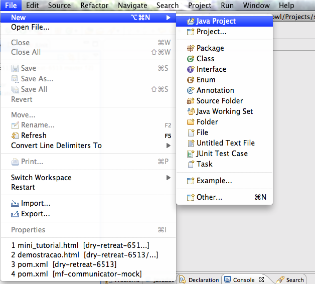
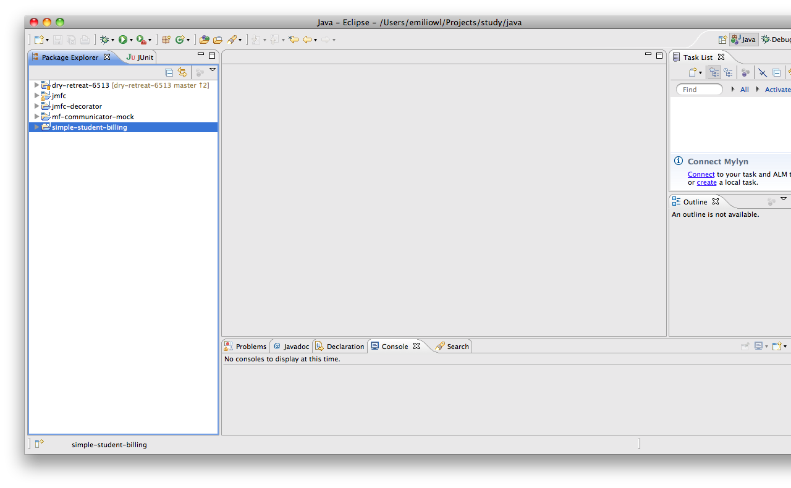

Este guia cobre os principios básicos para:
Assumimos que você já possui experência no desenvolvimento com a linguagem Java e que está utilizando a IDE Eclipse.
Importante: todo o código fonte do projeto que vamos criar está disponível no GitHub para consulta futura.
O JMFConnector é uma biblioteca especializada em traduzir BOOKs da Linguagem Cobol para a estruturas de dados no formato de mapas para a Linguagem Java, tornando o desenvolvimento para as equipes de COBOL e Java muito mais simples e a comunicação entre elas muito mais dinâmica.
O JMFConnector foi arquitetado para ser o menos intrusivo possível.
Desta forma ele atua como tradutor entre a sua aplicação e a biblioteca que provê acesso ao Mainframe já utilizada em sua empresa.
O grande benefício de sua utilização está no fato de que todo o mapeamento de BOOKs de entrada e saída é feito pelo JMFConnector de modo que
as equipes de Cobol tem apenas o trabalho de disponibilizar os BOOKs em formato TXT enquanto as equipes Java devem apenas conhecer as variáveis existentes nos BOOKs
para que possam enviar e receber os dados corretos nas estruturas de mapas disponibilizados pelo JMFConnector.
Diagrama exibindo o funcionamento do JMFConnector
Vamos imaginar o seguinte cenário:
Você precisa criar uma aplicação Java que vai consultar uma transação cobol para buscar por todos os estudantes cadastrados com matricula ativa e
enviar um e-mail com a cobrança.
A transação Cobol basicamente recebe como entrada os dados do estudante e retorna se o mesmo está ativo e qual o valor das suas mensalidades para o ano.
BOOK de Entrada
00100*7890 ENTRADA PARA O PROGRAMA QUE CALCULA PARCELAS DE ESTUDANTE 00100 00200*7890 COM MATRICULA ATIVA 00200 0030001 STUDENT-INFO. 00300 00300 02 STUDENT-ID PIC 9(7). 00300 00400*0000 CREDENCIAIS PARA CHAMADA DA TRANSACAO 00400 0050001 CREDENTIALS. 00500 00500 02 USER PIC X(10). 00500 00500 02 PASSWORD PIC X(8). 00500
BOOK de Saída
00100*7890 SAIDA PARA O PROGRAMA QUE CALCULA PARCELAS DE ESTUDANTE 00100 00200*7890 COM MATRICULA ATIVA 00200 0030001 STUDENT-INFO. 00300 00400 02 STUDENT-ID PIC 9(7). 00300 00400 02 STUDENT-NAME. 00400 00500 03 FIRST-NAME PIC XXXXXXXXXX. 00500 00500 03 SURNAME PIC X(15). 00500 00600 02 PARENTS-NAMES. 00600 00700 03 FATHER-NAME PIC XXXXXXXXXX. 00700 00700 03 MOTHER-NAME PIC XXXXXXXXXX. 00700 00800*0000 DETALHES DAS PARCELAS DO ESTUDANTE 00800 00900 02 QT-PARCELAS PIC 999. 00900 01000 02 PARCELAS OCCURS 1 TIMES DEPENDING ON QT-PARCELAS. 01000 01000 03 NUMERO PIC 99. 01000 01000 03 VALOR PIC +9999V99. 01000
Vamos criar um novo projeto Java que será executado a partir da linha de comando. O objetivo deste projeto é consultar uma transação Cobol enviando o ID do estudante (que é recebido como parâmetro de entrada) e exibir o retorno da mesma (as parcelas para o ano), posteriormente enviando os dados por e-mail.
Nosso projeto Java terá o nome de simple-student-billing, e deverá ser criado conforme padrão de criação de novo aplicativo Java no Eclipse File > New > Java Application ... Next ... Finish.
 
Nosso próximo passo será entender como estabelecer a comunicação com a transação mainframe e para isso vamos utilizar a biblioteca que simula uma conexão com o mainframe (mainframe-communicator-mock).
99% das bibliotecas que existem no mercado para conexão com o mainframe são extremamente simples e se baseiam em manter um arquivo de configuração no classpath da aplicação com dados do ambiente mainframe que será acessado e através normalmente de uma classe centralizadora enviar um stream de bytes (uma string sequencial) e devolver uma stream de dados (também uma string sequencial).
Isso faz com que toda a responsabilidade de estabelecer o protocolo de comunicação entre as aplicações fique a cargo das equipes de desenvolvimento Cobol e Java, que devem manter a comunicação sempre atualizada para garantir
que os dados sejam enviados nas posições corretas e lidos da mesma maneira.
Para simplificar nosso projeto e simular uma chamada a uma biblioteca padrão de comunicação com o mainframe, faremos utilização da biblioteca
mf-communicator-mock que basicamente, recebe uma string de entrada e caso os dados enviados sejam correspondentes envia de volta a string configurada.
Já sabemos como funciona a biblioteca de comunicação com o mainframe e já temos os books de entrada e saída.
Agora precisamos preparar nosso projeto para enviar os parametros esperados pelo mainframe, receber o retorno, tratar os dados recebidos e enviar o e-mail de cobrança.
Primeiro vamos analisar o book de entrada:
Devemos enviar sete números na sequência representando o STUDENT-ID (matrícula), e enviar as credenciais para acesso á transação USER (alfa-numérico com 10 posições) e PASSWORD (alfa-numérico com 8 posições).
A string enviada vai ficar no seguinte formato:
9999999XXXXXXXXXXXXXXXXXX
Porém conforme verificamos anteriormente, vamos utilizar o mainframe-connector-mock que deve receber nas primeiras 8 posicoes um valor alfa-numérico representando o nome do arquivo que contém o retorno da transação alvo,
ficando da seguinte maneira:
XXXXXXXX9999999XXXXXXXXXXXXXXXXXX
| Parametro | Valor | Tipo |
|---|---|---|
| Nome do arquivo | TRANC1\b\b\b | Alfa-numérico de 8 Posições |
| Matrícula | Parametro de entrada | Numérico de 7 posições |
| Usuário | USUARIO123 | Alfa-numérico de 10 posições |
| Senha | SENHA123 | Alfa-numérico de 8 posições |
Esta primeira parte vai se aplicar como ponto de entrada para o próximo passo, por isso vamos abrir uma sessão aqui mesmo.
Começamos criando nossa class Entry. Ela basicamente recebe como entrada o STUDENT-ID, monta a string de envio para a transação, recebe o retorno e repassa para a class Billing. Este procedimento parece simples, mas como estamos utilizando data parsing, vamos nos deparar com alguns problemas:
public static void main(String[] args) {
if (args.length != 1)
throw new IllegalArgumentException("Expecting only 1 parameter.");
System.out.println("STUDENT-ID: " + args[0]); //printing the student-id received for test purpose only
//call the mainframe connector with the string:
String input = "TRANC1 " + clean(args[0]) + "USUARIO123SENHA123";
System.out.println("string sent: " + input); //printing the input string for test purpose only
String output = ImsConnectMock.getConnection().call(input);
System.out.println("string received: " + output); //printing the output string for test purpose only
}
clean
private static String clean(String studentId) {
int positionCut = 7;
if(studentId.length() < 7)
positionCut = studentId.length();
String newString = studentId.substring(0, positionCut);
return fillWithLeftZeros(Integer.parseInt(newString) + "", 7);
}
fillWithLeftZeros
private static String fillWithLeftZeros(String number, int numberSize) {
String _number = number;
while (_number.length() < numberSize) {
_number = "0" + _number;
}
return _number;
}
O próximo passo é criar a classe Billing que será responsável por traduzir o retorno do mainframe e montar um e-mail para ser enviado como cobrança.
Problemas a vista!
Mais uma vez, este procedimento parece simples, mas como estamos utilizando data parsing, vamos nos deparar com alguns detalhes:
/**
* Create a billing from an String entry, according to the following format:
* STUDENT-INFO.
* STUDENT-ID PIC 9(7).
* STUDENT-NAME.
* 03 FIRST-NAME PIC XXXXXXXXXX.
* 03 SURNAME PIC X(15).
* PARENTS-NAMES.
* 03 FATHER-NAME PIC XXXXXXXXXX.
* 03 MOTHER-NAME PIC XXXXXXXXXX.
* DETALHES DAS PARCELAS DO ESTUDANTE
* QT-PARCELAS PIC 999.
* PARCELAS OCCURS 1 TIMES DEPENDING ON QT-PARCELAS.
* 03 NUMERO PIC 99.
* 03 VALOR PIC +9999V99.
* @param billingInfo
*/
public Billing(String billingInfo) {
if (billingInfo.length() < 55)
throw new IllegalArgumentException("Comunicação inválida - String de entrada deve ter no mínimo 55 caracteres.");
setStudentId(billingInfo.substring(0, 7));
setFirstName(billingInfo.substring(7, 17));
setSurname(billingInfo.substring(17, 32));
setFatherName(billingInfo.substring(32, 42));
setMotherName(billingInfo.substring(42, 52));
setQuantidadeParcelas(billingInfo.substring(52, 55));
//calculando parcelas
parcelas = new ArrayList();
for (int i = 0, init=55; i < quantidadeParcelas; i++) {
if (billingInfo.length() < init + 8)
throw new IllegalArgumentException("Comunicação inválida - Dados insuficientes para calcular próxima parcela");
int number = Integer.parseInt(billingInfo.substring(init, init += 2));
double value = new Double(billingInfo.substring(init, init += 4)
+ "."
+ billingInfo.substring(init, init += 2));
Parcela parcela = new Parcela(number, value);
parcelas.add(parcela);
}
}
Finalizamos inserindo a chamada para o método sendMail do MailSender, passando um objeto Billing como parametro, no método main de Entry.Agora que já conhecemos os objetivos do projeto e já fizemos uma implementação utilizando apenas a data parsing, vamos experimentar realizar a mesma tarefa utilizando o JMFConnector, para conhecer os benefícios da ferramenta.
Para fazer esta etapa será necessário criarmos o nossa classe de entrada (Entry) que receberá os parametros, fará chamada ao mainframe e enviará a string retornada para a classe Billing que fará o tratamento nos dados recebidos para criar o e-mail de cobrança para o estudante, entregando o processamento para a classe MailSender que finalizará o processo enviando o e-mail.
O JMFConnector consegue interpretar e traduzir um book Cobol para estruturas de dados no formato de mapas na linguagem Java.
Isso significa que seu time Java, só precisa conhecer quais são os campos do Book Cobol, para capturá-los nos mapas gerados pelo JMFConnector. Todo o tratamento dos dados
e a garantia de integridade das informações fica por conta do JMFConnector.
Insira a biblioteca no classpath da aplicação seguindo os mesmos procedimentos adotados no passo 6. Para conseguir uma versão da biblioteca entre em contato com nosso time de vendas.
O JMFConnector precisa dos books para converter os dados presentes no books em estruturas de mapas.
Depois de feita a conversão, esta informação é armazenada em memória (podendo ser em mapas ou cache distribuído).
public static void main(String[] args) {
if (args.length != 1)
throw new IllegalArgumentException("Expecting only 1 parameter.");
System.out.println("STUDENT-ID: " + args[0]); //printing the student-id received for test purpose only
//call jmfc for create the trancode
try {
init();
BookStore.getBook("tranc1-in").get("STUDENT-INFO").get("STUDENT-ID").setJavaValue(args[0]);
BookStore.getBook("tranc1-in").get("STUDENT-INFO").get("CREDENTIALS").get("USER").setJavaValue("USUARIO123");
BookStore.getBook("tranc1-in").get("STUDENT-INFO").get("CREDENTIALS").get("PASSWORD").setJavaValue("SENHA123");
//call the mainframe connector with the string:
String input = MainframeParser.parseBookToString(BookStore.getBook("tranc1-in"));
input = "TRANC1 ".concat(input);
System.out.println("string sent: " + input); //printing the input string for test purpose only
String output = ImsConnectMock.getConnection().call(input);
System.out.println("string received: " + output); //printing the output string for test purpose only.
} catch (IOException e) {
// TODO Auto-generated catch block
e.printStackTrace();
} catch (BusinessException e) {
// TODO Auto-generated catch block
e.printStackTrace();
}
}
init
private static void init() throws IOException, BusinessException {
Map<String, String> books = new HashMap<String, String>();
books.put("tranc1-in", Entry.class.getClassLoader().getResource("TRANC1-IN.book").getPath());
books.put("tranc1-out", Entry.class.getClassLoader().getResource("TRANC1-OUT.book").getPath());
BookStore.loadBooks(books);
}
Como não poderia ser diferente nosso próximo passo é fazer a implementação da classe Billing. Desta vez a classe deve se ater apenas em representar uma fatura.
É claro que ainda existe a responsabilidade de conhecer os campos do Book que vem do mainframe, no entanto, como pode ser observado no código da classe Entry, todo parsing e
conversão ocorre dentro do JMFConnector, restando ao desenvolvedor da classe Billing focar em resolver as questões funcionais do software.
O JMFConnector é uma biblioteca especializada em traduzir BOOKs da Linguagem Cobol para a estruturas de dados no formato de mapas para a Linguagem Java, tornando o desenvolvimento para as equipes de COBOL e Java muito mais simples e a comunicação entre elas muito mais dinâmica.
O JMFConnector é uma biblioteca especializada em traduzir BOOKs da Linguagem Cobol para a estruturas de dados no formato de mapas para a Linguagem Java, tornando o desenvolvimento para as equipes de COBOL e Java muito mais simples e a comunicação entre elas muito mais dinâmica.